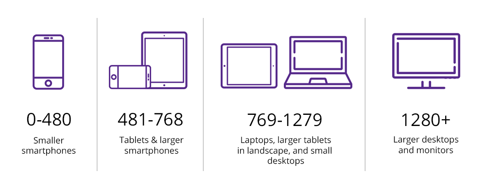

Responsive Web Design
One design. Many screens.

Responsive layouts automatically adjust and adapt to any device screen size, whether it is a desktop, a laptop, a tablet, or a mobile phone.
Media Queries
We can target the various sizes of these devices using media queries.
Media queries do not target a device, they target a screen size.
The @media rule does that like this:
div.example {
background: red;
}
@media screen and (max-width: 600px) {
div.example {
background: blue;
}
}
Size Range
If we want to target a size range we would do something like this:
@media screen and (min-width: 600px) and (max-width: 900px) {
div.example {
background: yellow;
}
}
Media Types
| Value | Description |
|---|---|
| all | Default. Used for all media type devices |
| Used for printers | |
| screen | Used for computer screens, tablets, smart-phones etc. |
| speech | Used for screenreaders that “reads” the page out loud |
Breakpoints
What media queries sizes to set?
